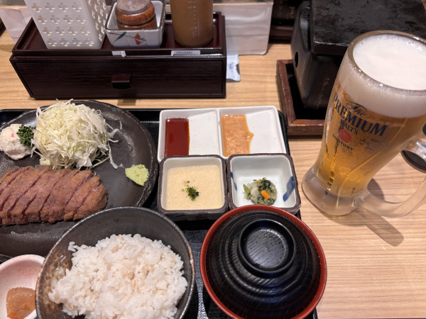
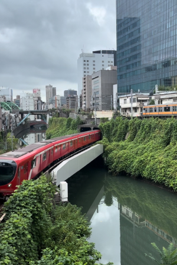
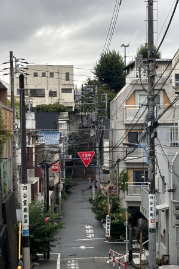
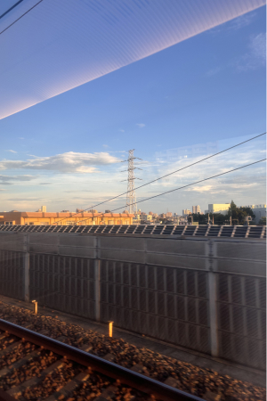
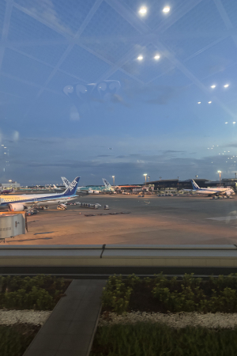

2024.8.30-9.2
2학년 2학기 개강 전 일본 여행을 혼자 떠나보기로 결심했다. 가장 좋아하는 도시인 도쿄로 여행지를 정했고, 즉흥적으로 정한 여행에다가 혼자서 가는 여행이었기에 엄청 기대되고 걱정도 됐던 것 같다. 여행 첫날에 어디를 가야할지 고민하다 작년 치바대 워크샵을 갔을 때 머물렀던 곳을 가기로 결정했다. 그렇게 공항에 내려 숙소에 짐을 맡긴 뒤 스미다구에 가게되었다. 혼자서 길을 거닐며 해외에 있으니 나도 모르게 센치해지고 엄청 들떴다. 아사쿠사역에 내려서는, 저번에 왔을 때 먹지 못한 아사쿠사 규카츠를 먹으러 갔다. 길고 긴 웨이팅 후 들어간 매장에는 좌석이 많이 없어 한국인 커플과 합석해 앉았고 작은 가림판 하나를 두고 밥을 먹기 시작했다. 나마비루와 함께 먹는 규카츠는 감동적이었고 타지에서 혼자 맥주를 마시는 게 스스로 어엿한 어른이 된 것 같아 뿌듯하고 자랑스러웠다. 그렇게 밥을 먹고 아사쿠사와 스카이트리를 구경한 뒤 숙소로 돌아가려는데 소라마치 앞에서 일본인 남성에게 난파를 당했다. 아사쿠사역까지 계속 데려다달라는 그를 놔두고 얼른 지하철역으로 들어왔다.
다음날은 신주쿠와 시부야를 가는 일정이었는데 도쿄에서 시부야가 가장 좋아하는 장소였기에 두근두근 제일 기대되는 날이었다. 우선 신주쿠쿄엔을 먼저 갔는데 도심 속 이렇게나 초록초록한 공간이 있었다니,, 기대했던 것보다 훨씬 좋았다. 태풍이 온다고 해서 비도 조금 내렸지만 오히려 호수에 물이 떨어지는 모습이 예뻐서 운치있었다. 비가 좀 그치고 나서는 시원한 레몬에이드를 마시며 구경하고 배가 고파져서 돈카츠를 먹으러 갔다. 그때바로 검색해서 찾아간 돈카츠 집이었는데 너무 바삭바삭,, 최고의 맛이었다. 한접시 뚝딱하고 기분좋게 시부야로 넘어갔다. 여기서 웃긴 점은 시부야역에서 또 난파를 당했다. 출구를 찾기 위해서 역사 내에서 지도를 보고 있었는데 갑자기 나한테 오더니 “저기 너무 덥지 않니?”라고 하면서 자기랑 음료수를 마시러가자고 제안해왔다. 그래서 그냥 친구 약속있다고 거짓말을 친 뒤 도망쳤다.
시부야에서 가장 기대하고 있었던 건 늦은 오후에 있을 시부야스카이였는데 예약한 시간이 오기 전까지 디즈니스토어와 슬램덩크 팝업스토어와 서점을 돌아다니며 열심히 구경했다. 그러나 시부야 스크램블 교차로에서 어떤 30대처럼 보이는 아저씨에게 또 난파를 당했다. 이 아저씨가 제일 끈질겼는데 시부야스카이까지 쫓아오려고 하길래 예약한 사람만 들어올 수 있다고 설명해주고 예매한 시간이 찾아와 나는 바로 시부야 스카이로 행했다. 아쉽게도 태풍의 영향으로 야외 전망대는 가지 못했지만 실내에서 음악을 들으며 보는 시부야 야경은 정말 끝내줬다. 야경을 한껏 즐기고 나와 마지막으로 나카메구로로 가서 전세계에서 몇 없다는 스타벅스 리저브 로스터리에 가서 커피에이드 파인애플 선샤인을 마셔주고, 라멘까지 야무지게 먹은 뒤 숙소에 돌아왔다.
셋째날은 저번 도쿄여행 때 가지못해서 아쉬웠던 도쿄타워를 보러가는 일정이었다. 도쿄타워를 가기 전 아자부다이힐즈를 가서 도쿄의 부촌을 구경하고 초콜릿 아이스크림까지 먹어준 뒤 도쿄타워로 떠났다. 도쿄타워에는 생각보다 볼 게 많이 없었어서 살짝은 실망한 채로 스즈메의 문단속에 나오는 장소로 떠났다. 딱 영화 장면처럼 열차 두개가 지나가는 장면을 찍고 싶어서 혼자 멀뚱히 기다리다가 동영상을 잘 찍고 영화에 나오는 다리도 보러 가는데, 가는 와중에 비가 갑자기 엄청 내려서 바지 밑단이 쫄딱 젖어버렸다. 찝찝하긴 했지만 동영상 찍을 때는 비가 안와서 정말 다행이었다. 비가 좀 멎을 때쯤 다시 역으로 돌아가서 이번에는 너의 이름은 영화에 나오는 계단을 보러 떠났다. 사람이 많이 없어서 원없이 사진을 찍고 주변 거리를 돌아다니다가 자리를 떴다. 이렇게 내가 좋아하는 영화에 나오는 장소들을 실제로 가보니 싱숭생숭하면서도 뭔가 울컥했다. ㅎㅎ 그 뒤로는 쿠라스시를 10접시 먹어주고 긴자거리를 구경한 뒤 하루를 마무리했다.
 여행의 마지막 날에는 오모테산도와 하라주쿠를 갔다. 마지막 날이 되어서야 날씨가 완전 맑아져서 아쉬우면서도 마지막은 좋은 날씨에서 여행할 수 있어서 다행이라고 생각이 들었다. 오모테산도에서 옷가게도 구경하고 고등학교 때 친구가 다니고 있는 아오야마가쿠인 대학교도 구경해보며 여행을 즐겼다. 점심은 끝내주게 맛있었던 스테이크를 먹고나서 하라주쿠에 가서 디저트로 파르페를 먹었다. 늦은 오후 비행기였기에 여유로우면서도 아쉬움이 크게 남는 하루를 보내고 나리타 공항을 가기 위해 스카이라이너를 탔다. 노을이 지는 풍경을 보면서 후지이 카제의 타비지를 듣는 순간은 정말 잊지 못할 여행의 마무리였다. 여행 중간중간 태풍 때문에 비도 오고 비행기도 연착되는 이슈도 있었지만 즐거움과 만족감이 너무 컸던 여행이었기에 최고로 행복했다.
 